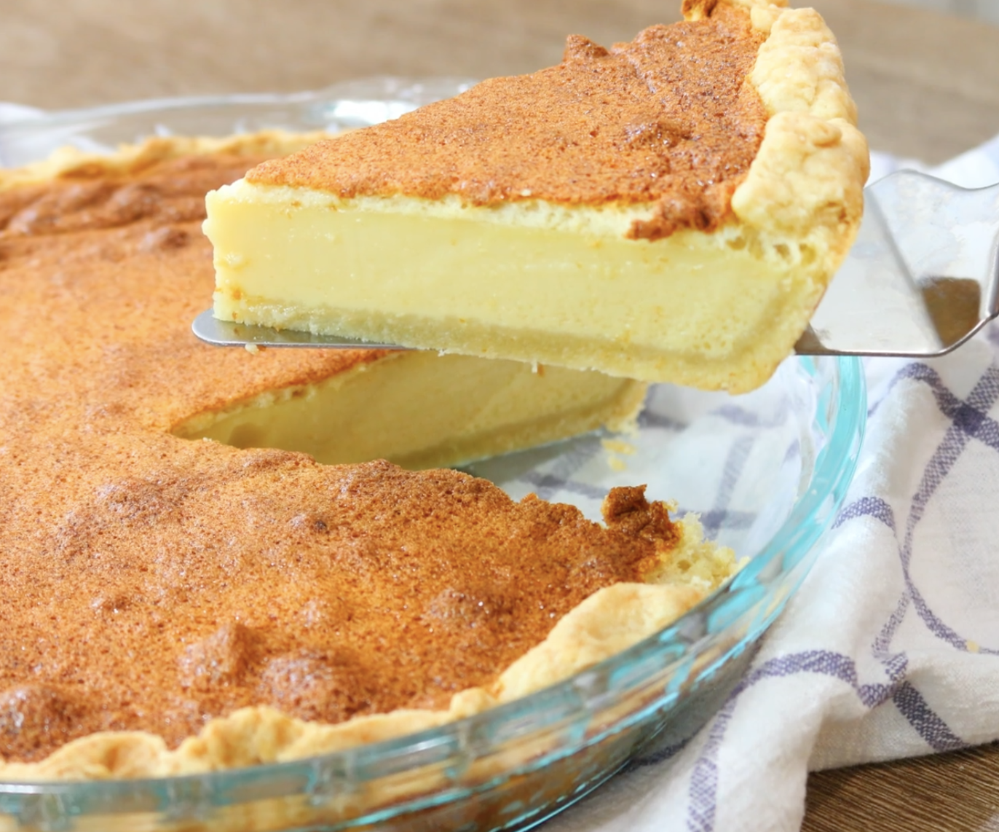

Filipino Egg Pie

Description
Filipino Egg Pie is a sweet baked dessert similar to custard pie. It has a smooth, creamy filling made with eggs, milk, and sugar inside a flaky crust.
Ingredients
- 1 pie crust
- 3 large eggs
- 1 can evaporated milk (370 ml)
- 1 cup sugar
- 1 teaspoon vanilla extract
- 1/4 teaspoon salt
Steps
- Preheat the oven to 180°C.
- In a bowl, beat the eggs until well combined.
- Add evaporated milk, sugar, vanilla extract, and salt. Mix thoroughly.
- Pour the mixture into the pie crust.
- Place the pie in the oven and bake for 45–50 minutes.
- Check if the center is set using a toothpick.
- Let the pie cool before slicing and serving.
Home